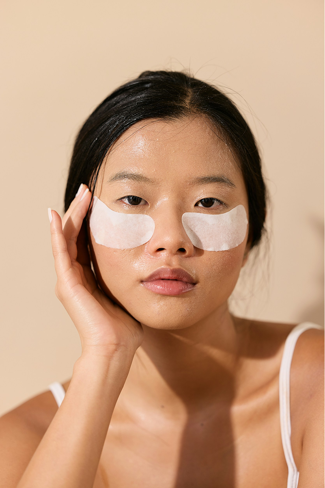

顾客信任从可解释的检测开始
在美妆零售门店中，顾客通常会用干燥、出油、暗沉、敏感、毛孔明显等感受来描述自己的皮肤。问题是真实的，但顾客往往不容易判断原因和护理方向。
准确的皮肤检测为顾客和顾问提供共同查看的参考标准。ChoiceDx Skin Scan 这样的 AI 皮肤分析体验，可以把主观感受转化为可视化信息和咨询语言。
信任来自可理解的依据。当顾客理解自己的皮肤状态与产品推荐之间的关系时，咨询就不再只是销售，而更像是解决问题的过程。

皮肤检测仪的作用与顾问的作用
皮肤检测仪是起点。它帮助观察皮肤状态，并采集图像或测量数据。但仅有设备并不能完成顾客信任。
顾问需要把检测结果转化为顾客能够理解的语言。例如水分、油脂、毛孔、肤色、弹性等指标，如何与顾客的实际困扰相关联。
好的门店检测体验应当把设备、AI分析、报告、顾问解读和产品推荐连接成一个完整流程。

为什么准确检测让推荐更有说服力
顾客希望知道为什么某个产品适合自己。相比热门产品或促销产品，基于自身皮肤状态的推荐更容易获得信任。
当 AI 皮肤分析结果被整理成咨询报告时，门店顾问可以更清楚地解释推荐理由，并减少顾客购买时的不确定感。
准确检测不仅影响购买前咨询，也影响复访咨询。通过比较前后结果，顾客可以看到护理习惯带来的变化。
建立顾客信任的门店流程
第一步先听顾客的困扰。第二步通过 Skin Scan 确认皮肤状态。第三步由顾问解读 AI 分析结果。第四步把顾客困扰和检测结果连接到产品类别。第五步保存结果，便于下次到店比较。
这个流程可以减少对单个顾问经验的依赖，并帮助不同门店提供更一致的咨询质量。
在零售场景中，重要的不是检测有多复杂，而是顾客能否理解结果。检测结果用清楚的语言表达时，顾客信任会更容易形成。
釜山西面 Olive Young 釜山田浦站店的 Skin Scan 体验
在西面的 Olive Young 釜山田浦站店，并排设置的 Skin Scan 体验亭中，不同类型的顾客正在使用 ChoiceDx 进行皮肤检测。
位于釜山西面年轻人街区中心的这家门店，是一座通透玻璃围合的圆形建筑，外立面挂着 OLIVE YOUNG 标识。推开写有 “WELCOME WE ARE OLIVE YOUNG” 的入口后，顾客会进入一处两层规模的零售空间。
店内深处的 Skin Scan 区域，与以往门店中常见的银色体验亭不同。两个采用金色拱形框架和橙色帘幕的新设计体验亭并排设置，旁边还设有咨询服务台。
站在体验亭前，屏幕上会出现是否需要帮助进行皮肤检测的提示，并提供韩语、英语、中文、日语的语言选择按钮。触摸屏幕后，可用于门店咨询和顾客体验的诊断设备 ChoiceDx 会开始引导流程。
由于两台体验亭可以同时运行，朋友结伴而来的年轻顾客并排查看屏幕的场景、带着孩子等待检测的顾客场景，都可能出现在同一空间中。西面商圈的特点也让该门店同时覆盖年轻购物客群和家庭访客。
测量结束后，基于诊断数据的咨询辅助结果会保存到 Olive Young App 中。顾客在简短交流后，通常会自然走向店内的护肤产品区域。


ChoiceDx 观点
ChoiceDx 将皮肤检测视为面向美妆零售咨询的数据化体验，而不是医疗判断。
ChoiceDx Skin Scan 可以把 AI 皮肤分析结果连接到门店咨询、个性化产品推荐和复访比较，帮助门店建立顾客信任。
对 B2B 零售商和化妆品品牌来说，顾客信任会进一步影响咨询质量、复访可能性和品牌体验的一致性。
FAQ
为什么准确皮肤检测对顾客信任很重要？
因为它帮助顾客理解自己的皮肤状态与产品推荐之间的原因，使咨询更具可解释性。
皮肤检测仪会取代门店顾问吗？
不会。设备提供数据，顾问负责把结果连接到顾客困扰和产品推荐。
ChoiceDx Skin Scan 是医疗诊断吗？
不是。ChoiceDx Skin Scan 是用于美妆零售咨询和产品推荐支持的 AI 皮肤分析体验。